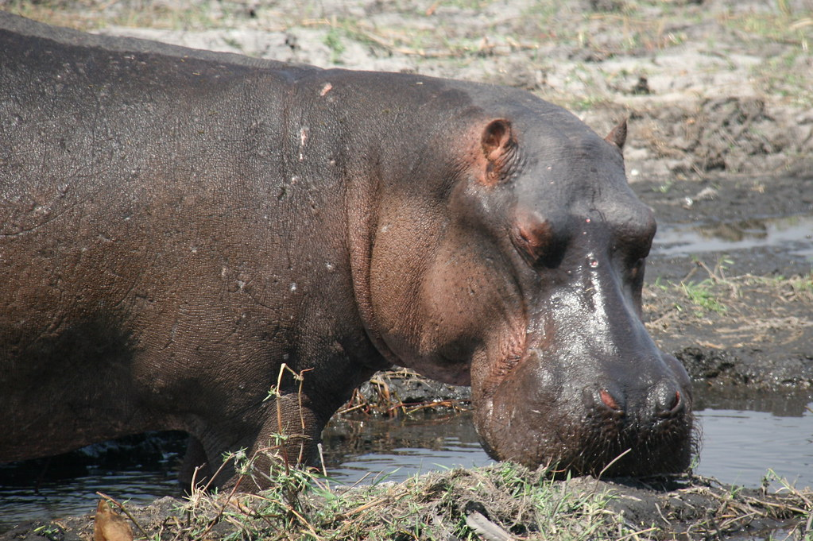

When you think of deadly and dangerous animals, what springs to mind? It is likely big, carnivorous, apex predators, such as lions, wolves, or sharks.
What you will learn from this list however is that size and strength can be deceiving. Sharks, although often unjustly perceived as very deadly, do not even make this list, being responsible for only six human deaths a year on average. Lions? Only 22!
Rather, the deadliest animals are often the smallest, and cause death not through strength, but through disease and toxins.
